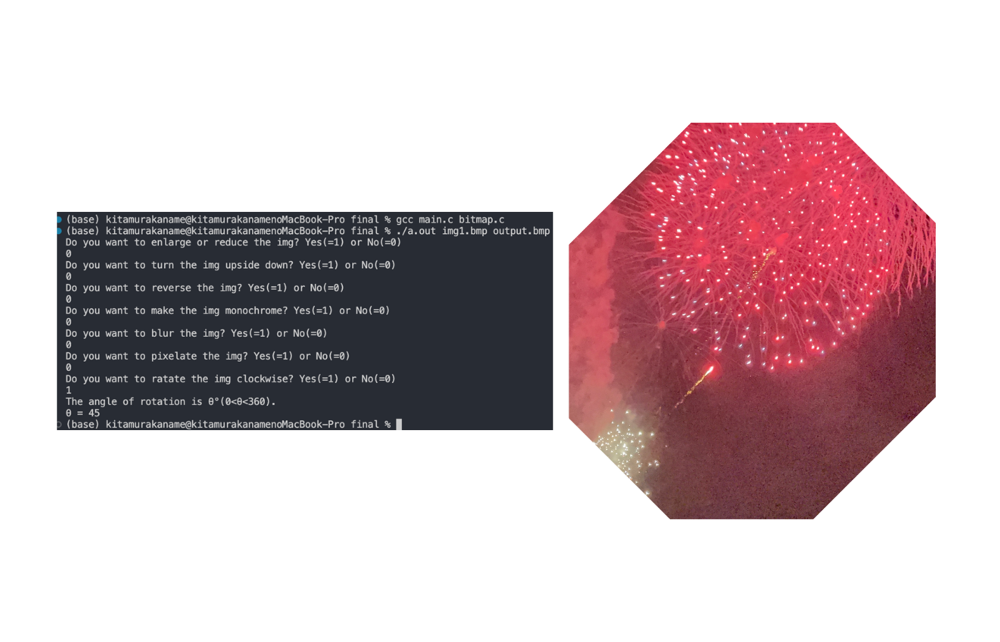

このプロジェクトは、大学の手続き型プログラミング発展の授業で実施した画像処理プログラムの課題です。2023年に、BMPファイルに対する様々な画像処理機能を実装しました。
プロジェクト名
BMP画像処理プログラム
実施時期
2023年8月
目的・概要
本プロジェクトの目的は、24bit RGB BMPファイルに対して、以下の7つの画像処理機能を実装することです：
- 拡大縮小
- 上下反転
- 左右反転
- モノクロ化
- ぼかし処理
- ピクセル化
- 回転
使用技術・ツール
C言語を使用し、主に以下の技術を活用しました：
- ファイル入出力（BMPファイルの読み書き）
- メモリ管理（動的メモリ確保と解放）
- 画像処理アルゴリズム（線形補間、回転行列など）
- 構造体（画像データの管理）
実装した機能の詳細
1. 拡大縮小
- 線形補間法を使用して、画像の品質を保ちながら拡大縮小を実現
- 幅と高さそれぞれに独立した拡大縮小率を設定可能
2. 上下反転・左右反転
- 画像データの配列操作による効率的な実装
- メモリ効率を考慮した一時バッファの使用
3. モノクロ化
- RGB値の平均を計算してグレースケール変換
- 視覚特性を考慮した重み付け変換も実装可能
4. ぼかし処理
- 指定範囲内のピクセル値の平均化によるぼかし効果
- 平均化範囲のサイズを自由に設定可能
5. ピクセル化
- 指定サイズのブロック単位でピクセル値を平均化
- モザイク効果の実現
6. 回転
- 回転行列を使用した正確な角度指定による回転
- 0度から360度までの任意の角度で回転可能
課題と改善点
プロジェクトを通じて以下の課題と改善点を特定しました：
- 操作の順序を自由に設定できる機能の追加
- モノクロ化における視覚特性の考慮（RGB値の重み付け）
- ぼかし処理の実行時間の最適化
- 回転処理における画像情報の損失防止
- 新機能の追加（縁取り、肌の美化、髪色変更など）
制作過程
まず、BMPファイルの読み書き機能を実装し、次に各画像処理機能を順次実装していきました。各機能の実装では、アルゴリズムの理解と最適化に重点を置き、メモリ管理やエラー処理にも注意を払いました。また、各機能の動作確認とデバッグを繰り返し行い、安定した動作を実現しました。